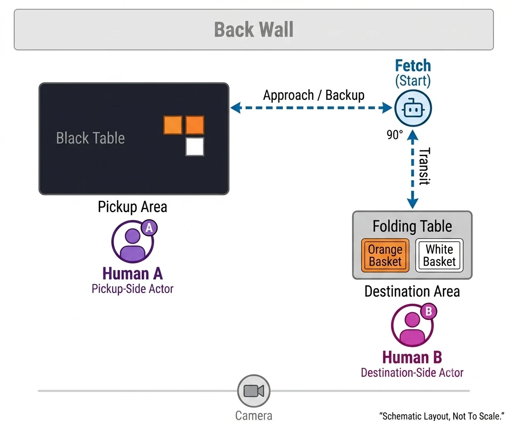

Case Studies
A closer look at the research, decisions, and evidence behind my work.

Software and Automation Coding in UAS Reports
Does the share of NASA Aviation Safety Reporting System (ASRS) uncrewed aircraft system (UAS) reports coded Software and Automation differ across regulatory regime and control mode, and how large do those differences look once uncertainty is shown?
Descriptive analysis of 497 reports.
Read Case Study
Observer paradigm for robot-teammate trust
Does the decision-rights structure of a human-robot team change how an outside observer judges the robot's trustworthiness?
Proposal stage, no data collected.
Read Case Study
CrisisCourier UAS operator displays
How could a disaster-relief UAS assign routine flight tasks to automation while keeping mission decisions with its pilot, navigator, and payload operator?
Design concept, not tested with operators.
Read Case Study
SpaceHACK for Sustainability
Where do wildfire risk and social disparity meet at the wildland-urban interface, and how could forest thinning reduce fire severity while supporting lower-income communities?
Hackathon concept, Honorable Mention.
Read Case Study